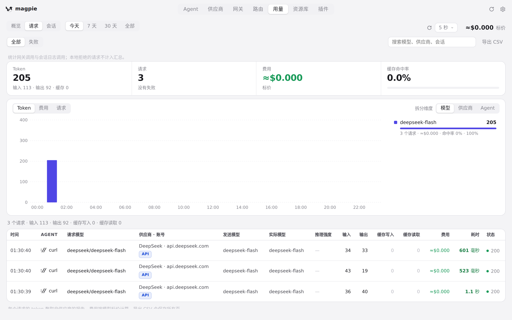
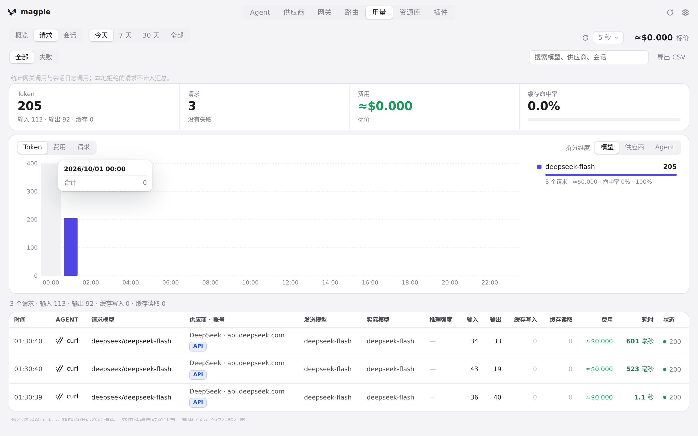
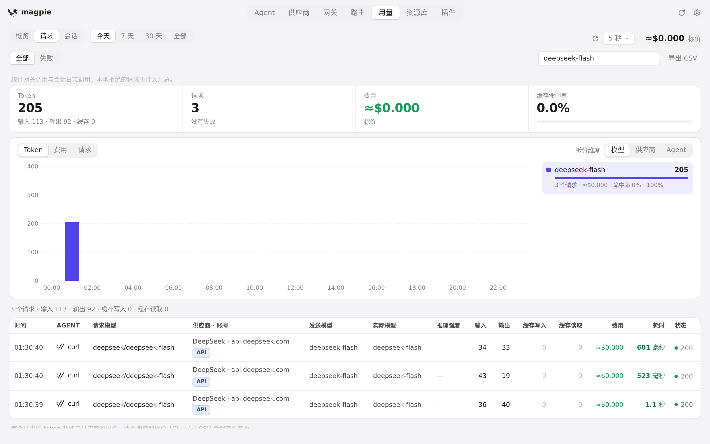
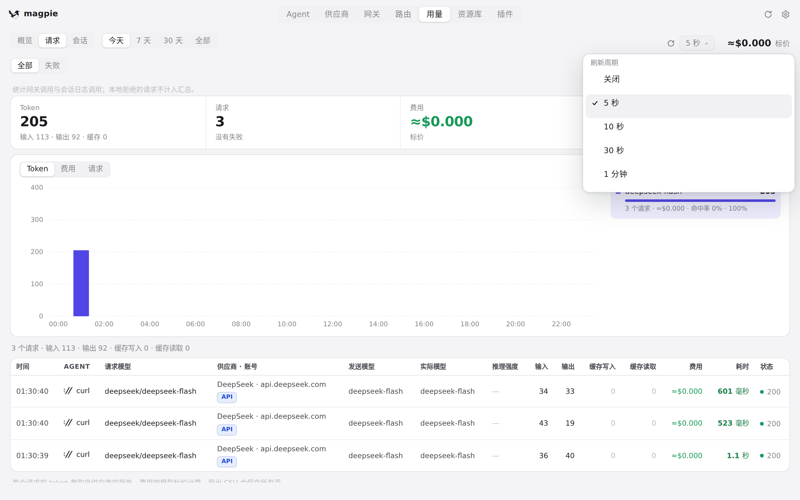
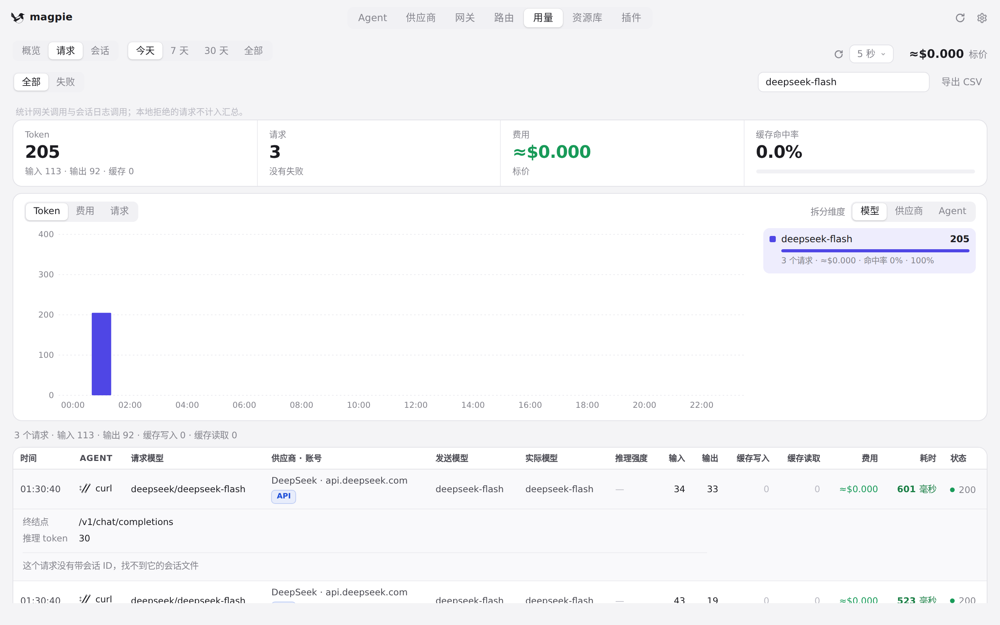
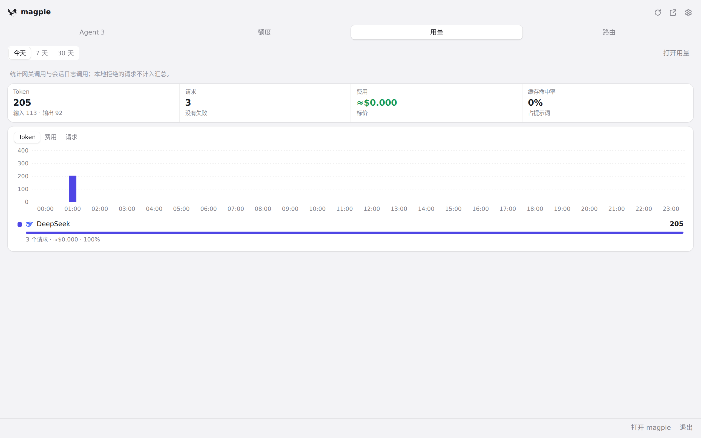
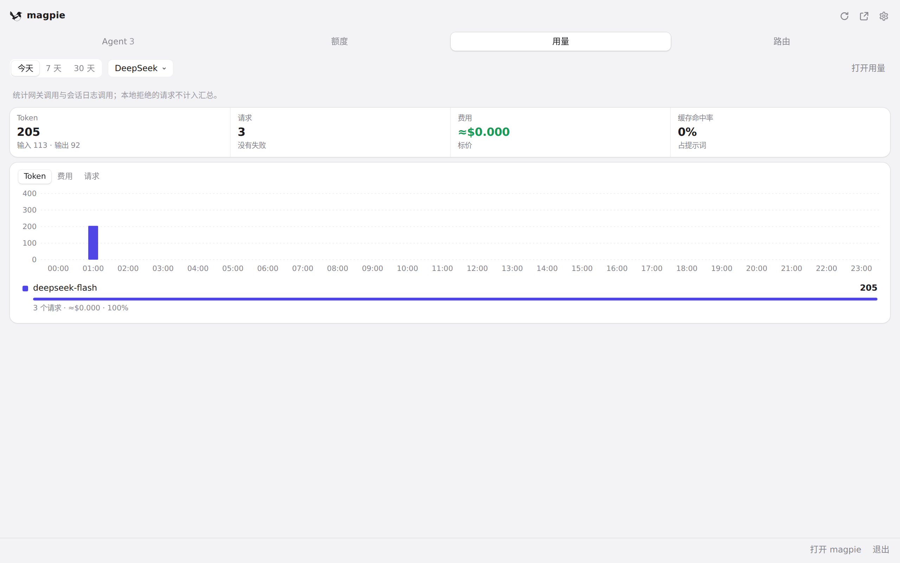

#239 界面预览
commit 9aee0c6 · 回到 PR · 「用量」页的「请求」标签新增四个汇总卡片、按模型/供应商/Agent 拆分的堆叠趋势图与对应的排行（点击可筛选），行内可展开请求详情（状态、请求 ID、端点、会话 ID 与内容），请求行新增数据来源/账号徽标、耗时配色与「≈」估算，默认期间改为「今天」，用量页头部新增立即刷新与刷新周期选择；托盘面板新增「用量」标签，显示同样口径的汇总、紧凑图表与排行。
红线是鼠标走过的轨迹，红色圆环是一次点击；底部文字是这一步在做什么。空格暂停，← → 逐段查看。

请求页的汇总、趋势图与排行 · 「请求」页：期间、四项汇总、趋势图、排行与请求列表

请求页的汇总、趋势图与排行 · 趋势图列上的提示框

请求页的汇总、趋势图与排行 · 按排行里点中的一项筛选后的列表与汇总

请求详情与刷新周期 · 「刷新周期」打开的菜单

请求详情与刷新周期 · 展开的请求详情：状态、请求 ID、端点、会话 ID 与内容部分

托盘面板的用量标签 · 面板的「用量」标签：期间、四项汇总、紧凑趋势图与排行

托盘面板的用量标签 · 在面板里点中一个供应商之后